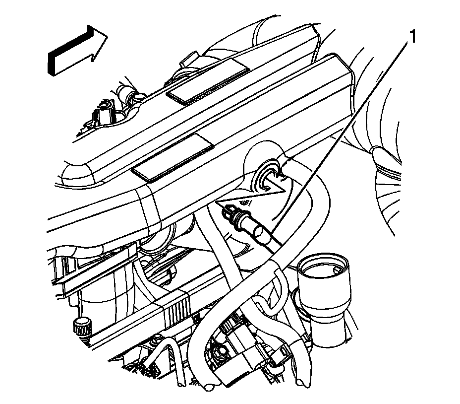

Air Cleaner Fresh Air Duct/Hose: Service and Repair
AIR CLEANER RESONATOR OUTLET DUCT REPLACEMENT
REMOVAL PROCEDURE

1. Remove the intake manifold sight shield.
2. Remove the positive crankcase ventilation (PCV) line (1) from the air cleaner outlet duct.

3. Remove the radiator inlet hose clamp retainer from the outlet duct.
4. Remove the radiator vent inlet hose retainer from the outlet duct.
5. Loosen the air cleaner outlet duct clamp (1) at the mass air flow (MAF)/intake air temperature (IAT) sensor.
6. Loosen the air cleaner outlet duct clamp (2) at the throttle body.
7. Lift up the air cleaner outlet duct at the resonator tab in order to separate the resonator from the stud on the intake manifold.
8. Remove the air cleaner outlet duct from the throttle body and MAF/IAT sensor.
INSTALLATION PROCEDURE
1. Install the air cleaner outlet duct to the throttle body and MAF/IAT sensor. Ensure that the resonator tab aligns with the stud on the intake manifold.
2. Push down on the air cleaner outlet duct resonator directly over the resonator tab in order to secure the resonator to the stud on the intake manifold.
3. Tighten the air cleaner outlet duct clamp (2) at the throttle body.
4. NOTE: Refer to Fastener notice.
Tighten the air cleaner outlet duct clamp (1) at the MAF/IAT sensor.
Tighten the clamps to 4 N.m (35 lb in).
5. Install the radiator vent inlet hose retainer to the outlet duct.
6. Install the radiator inlet hose clamp retainer to the outlet duct.
7. Install the PCV line (1) to the air cleaner outlet duct.
8. Install the intake manifold sight shield